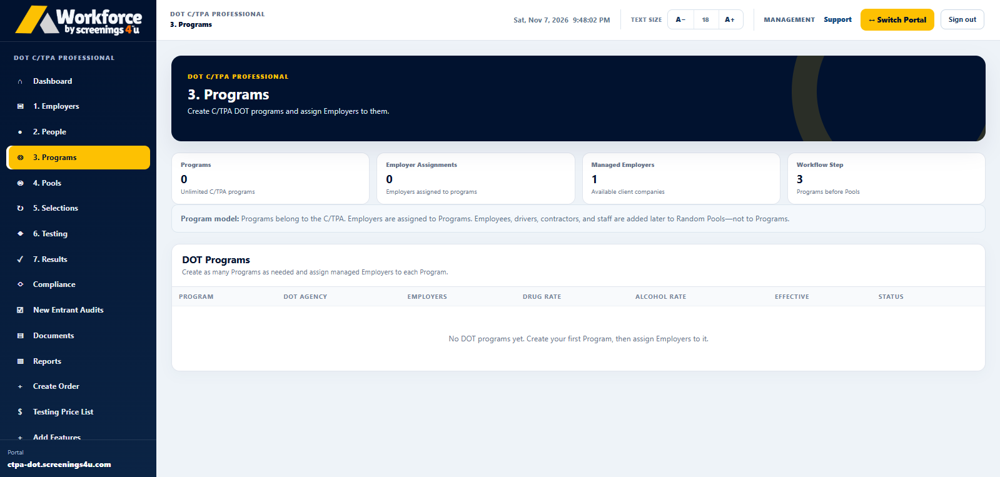
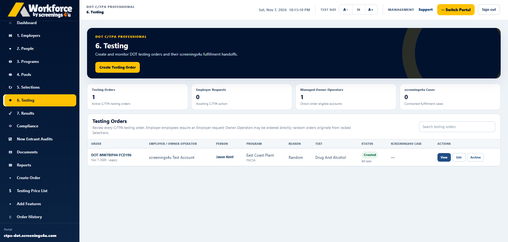
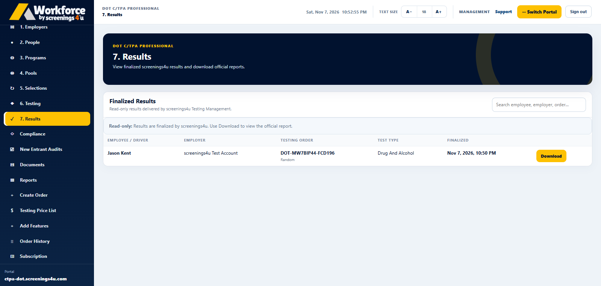

01 / EMPLOYER MANAGEMENT
Keep every employer organized.
Review the companies you manage, their account status, and the people associated with each operation without switching systems.
Explore employer workflows
Run your consortium and third-party administration business with software designed to organize employer clients, testing programs, random pools, selections, results, and reporting.
From a new employer account to an ongoing compliance program, keep the moving parts of your operation connected.
Review the companies you manage, their account status, and the people associated with each operation without switching systems.
Explore employer workflows
Organize DOT testing programs, covered populations and participation records.
Explore programs
Follow selection events, pool participation, and associated testing workflows.
Explore selections

Workforce brings testing orders, outcomes, documents and reporting into the same operational workspace so your team can follow through more efficiently.
Monthly subscription software for C/TPAs. Compare your options and continue to the established secure checkout.
Core tools to manage employer clients and your testing programs.
Advanced reporting and delivery tools for expanding operations.
Advanced controls for multi-client and white-label operations.
Individual laboratory tests, collections, screening orders and other fulfillment services may incur separate charges unless explicitly included in your selected plan. Features depend on plan and configuration.
Compare all C/TPA subscriptionsAnswers about subscriptions and managing your clients with Workforce.
Yes. Essential, Professional, and Enterprise are monthly software subscriptions. Testing and fulfillment costs may be billed separately.
Workforce C/TPA software is structured around employer client management. The level of access and administrative tools depends on the plan you choose.
Yes. Workforce supports random pool and selection-related program workflows, with features based on your subscription tier.
You are directed to the established secure checkout, followed by the account setup and onboarding process after successful purchase.